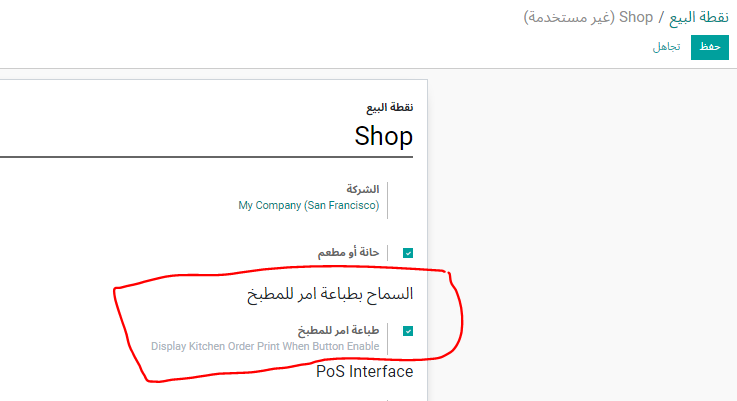
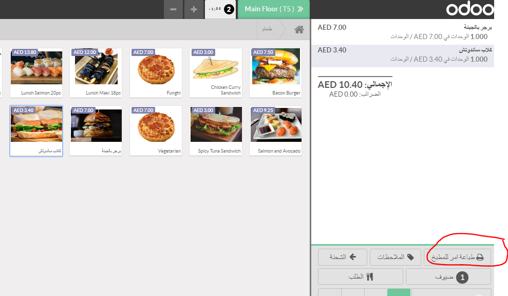
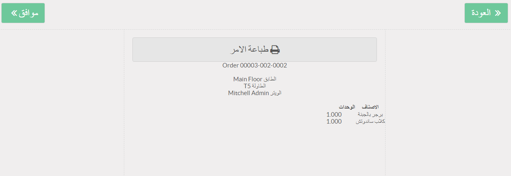
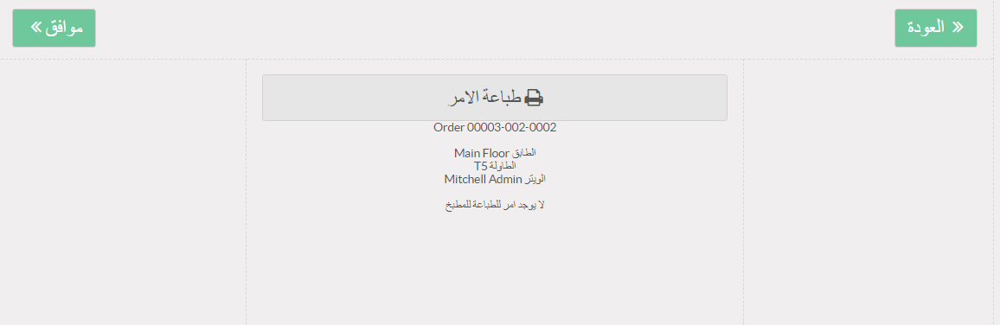
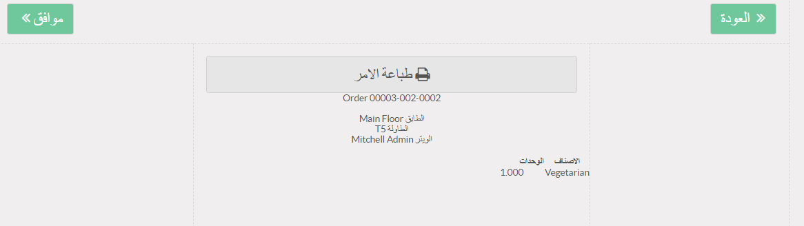

اذا حاول الكاشير الطباعة مرة اخرى تظهر الرسالة التالية وذلك لان الطباعة الجديدة تكون بالفرق في الاصنا فقط بين الطباعة السابقة والطباعة الجيدة

وحيث اننا في الشكل التالي قمنا باضافة صنف جديد لنفس طلب العميل كما يلي
فان البرنامج يقوم بطباعة الجديد فقط كما في الشكل التالي